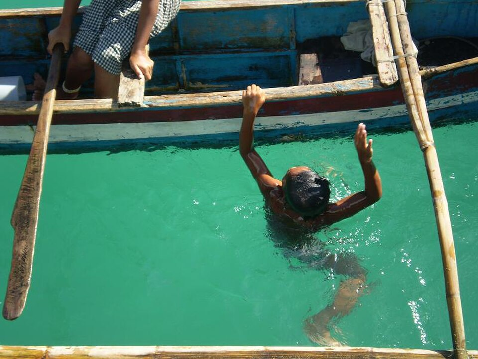
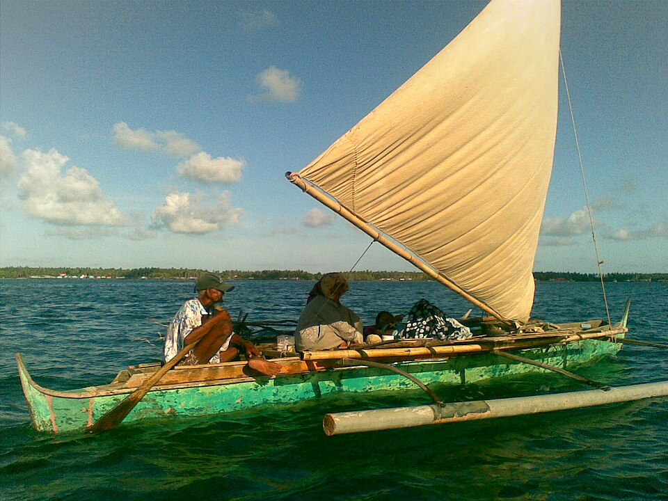
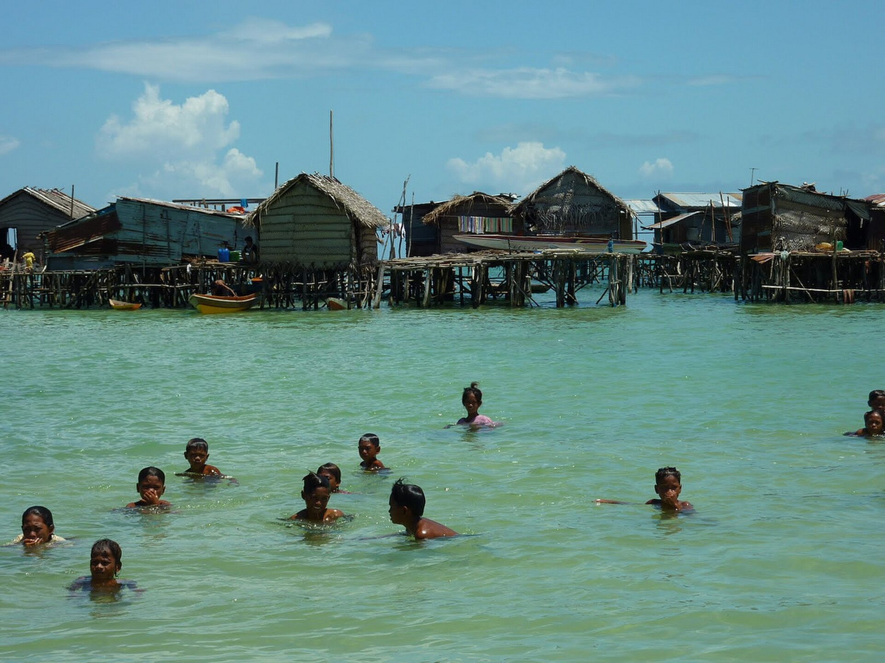
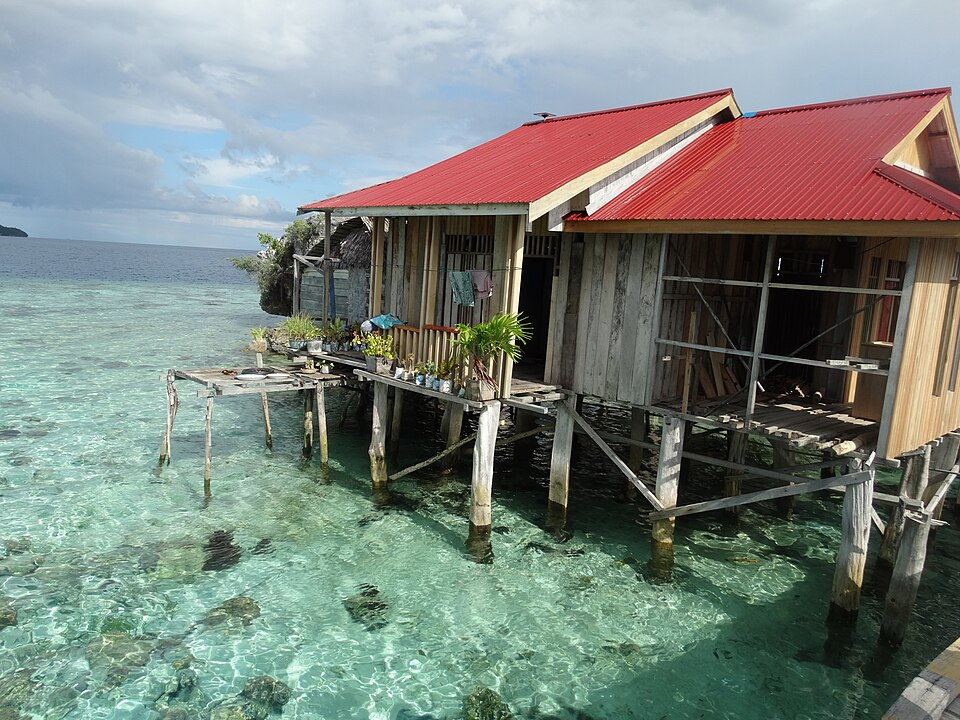
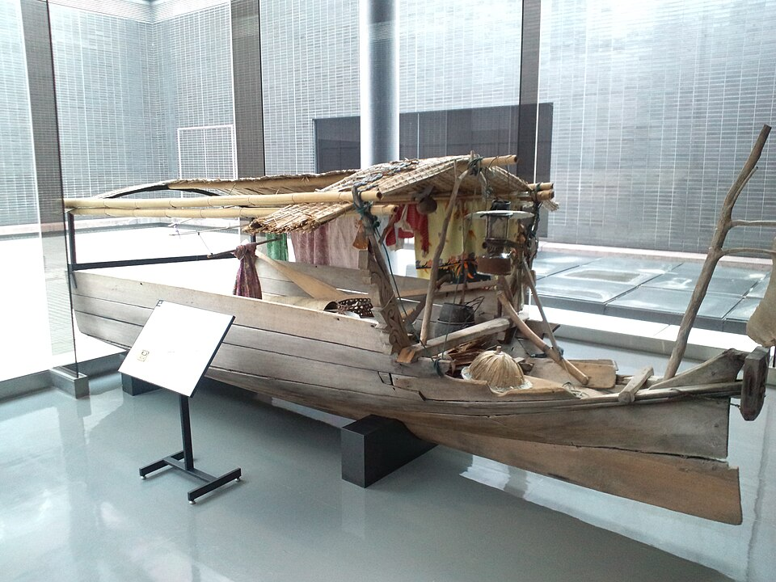
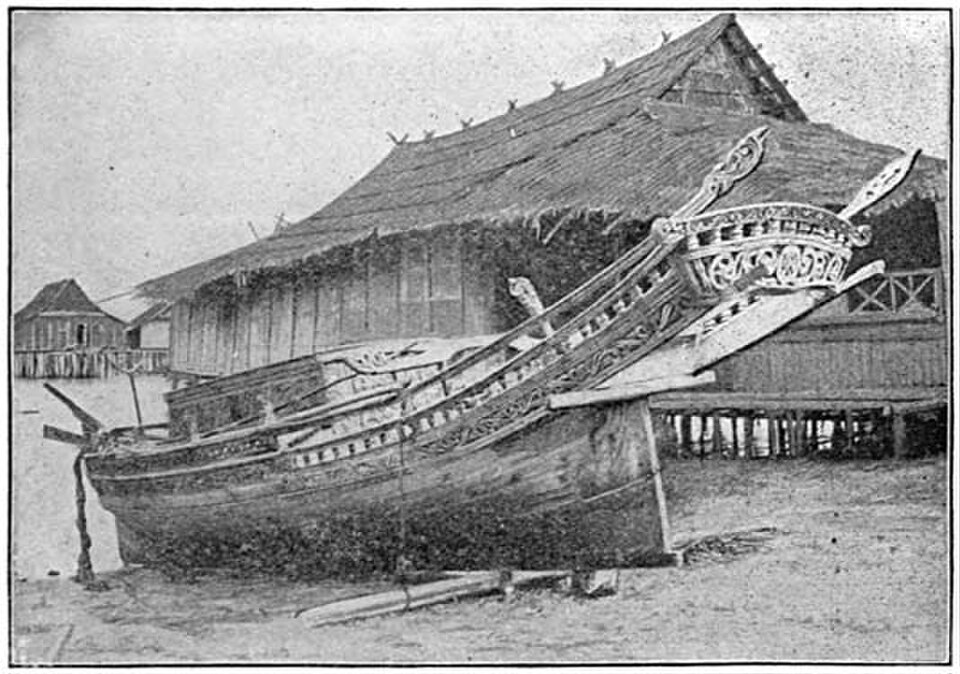
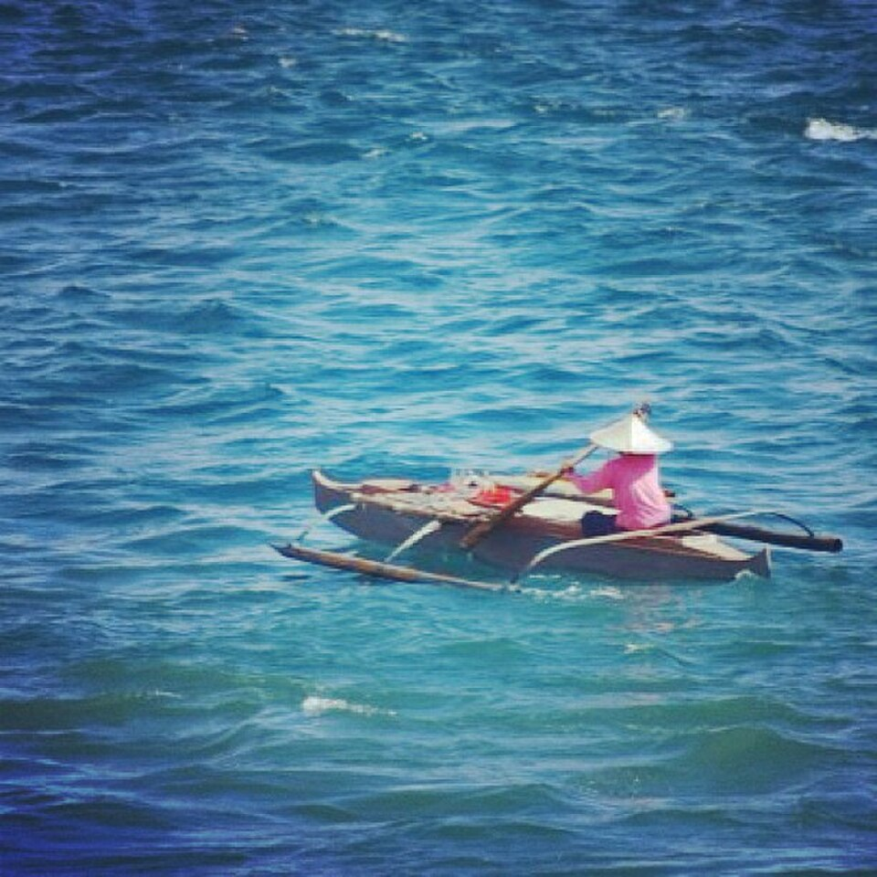

The life of the Bajau people begins not on solid ground, but on a swaying deck, accompanied by the steady rhythm of waves against the hull. For an average person, the ocean is a dangerous element, an alien environment where one can only stay temporarily. For the Bajau, it is exactly the opposite: the land feels unstable to them, causing "land sickness," while the sea provides peace and sustenance. For centuries, these people have honed the art of survival where modern technology fails, and their entire existence is tied to one primary tool — the Lepa-Lepa object.
The Lepa-Lepa is more than just a means of transportation; it is a living being, a family member, and the only true home a nomad recognizes. Unlike modern boats built in shipyards according to strict blueprints, every Lepa is handcrafted based on the master's intuition and the characteristics of the wood. The main secret of these boats lies in the complete absence of iron nails. The Bajau know what land-based engineering often forget: iron is a traitor in salt water. It rusts, expands, and eventually destroys the wood from the inside. Instead, they use wooden dowels and wedges made of "ironwood" or pama-brava. When such a boat is launched, the wood absorbs moisture, the pegs swell, and the structure locks firmly in place. The result is a monolithic yet incredibly flexible hull.
This flexibility is a key factor for survival during storms. Where the rigid steel hull of a modern vessel experiences colossal stress and may crack, the Lepa-Lepa "plays." It bends under the impact of the waves, allowing the ocean's energy to pass through it rather than resisting it. This is a high form of engineering based on understanding nature rather than trying to conquer it. The hull is often decorated with carvings that serve not only for beauty but also for protection against malevolent sea spirits. Every swirl on the bow is a charm, ensuring the boat finds its way home even in the thickest fog.


The upbringing of a Bajau child is another unique aspect of their culture. An infant becomes accustomed to the swaying of the boat before they can even hold their head up. A mother might clean fish or weave nets while her child sleeps in a cradle suspended from the mast. By age five, these children become full assistants. They don't just know how to swim; they feel the water as their native element. They have no fear of the deep, as the ocean is a vast playground for them. While children in the city learn to tie shoelaces, a young Bajau learns to hold their breath and distinguish fish species by the shadows they cast on the sandy bottom.
It is at this age that the foundations of their incredible physiology are laid. Constant breath-hold diving leads to biological adaptation. This does not happen in a single generation; it is the result of a thousand years of natural selection. Their senses tune to work in a different density. Their vision becomes sharper, their heart beats slower, and their blood is redistributed to prioritize nourishing the brain. The Bajau are, essentially, an evolutionary link between humans and marine mammals.
"When a Bajau nomad leaves their boat and goes underwater, their body ceases to function like that of a land-dweller."
This is not just training, but the result of millennia of evolution that turned an entire ethnic group into a kind of "amphibious people." The main secret of Bajau endurance is hidden not in the lungs, but in the spleen. Genetic studies have shown that the spleen in representatives of this people is, on average, 50% larger than in land-dwellers. This is a functional necessity. The spleen acts as a reserve oxygen tank: during a dive, it contracts, releasing a large portion of fresh, oxygen-rich red blood cells into the bloodstream. This allows hunters to remain underwater for several minutes without experiencing the oxygen deprivation that would cause an ordinary person to lose consciousness.


On land, our eyes are adapted to the refraction of light in the air, so everything seems blurry underwater. However, Bajau children possess a unique ability for "visual accommodation." They can voluntarily constrict their pupils into microscopic pinholes and change the shape of the lens. This allows them to see underwater as clearly as we see in bright sunlight. They notice the slightest movement of a camouflaged octopus or the glint of a small fish's scales where a tourist in a mask would see only a blurred spot.
Unlike professional divers who strive for neutral buoyancy, the Bajau often prefer "negative" buoyancy. A hunter takes a heavy stone in their hands or wears a weight belt to literally walk on the seafloor as if on land. This requires incredible control over the body and breath. They do not waste energy on active fin kicks; instead, they move with calm, measured steps, tracking their prey. This tactic allows them to save precious oxygen and avoid scaring the fish with unnecessary movements.
However, there is a price to pay for these abilities. One of the harshest Bajau traditions is the deliberate rupturing of the eardrums at an early age. This is done so that the pressure at depths of 20–30 meters does not cause sharp pain. The nomads say that "the ears must get used to the ocean." As a result, many elderly hunters have poor hearing on land, but in the water, they feel completely free. They can hear the sounds of the reef — the snapping of shrimp, the grinding of fish teeth against coral — and use these sounds for orientation in murky water or at night.
The Bajau's underwater arsenal is a clear example of how human ingenuity turns the wreckage of civilization into ideal hunting tools. The primary weapon in the life of every man in the community is a homemade speargun called a sumpit. Its frame is carved from dense, heavy wood that is pre-soaked in coconut oil for a long time. This makes the gun's body perfectly smooth and protects it from the aggressive saltwater, which can destroy ordinary wood in a matter of weeks.
The true power of this weapon lies in the rubber the nomads scavenge from the shores. The Bajau specifically look for old car tires washed up on the beach or found in port junkyards. They select high-quality rubber from well-known global brands, cut it into long thin strips, and attach it to the gun's frame. This homemade tension system does not lose its elasticity even at great depths, allowing the steel harpoon to pierce large fish from several meters away. The trigger mechanism remains extremely simple: it is bent from ordinary steel wire or pieces of rebar, because any complex mechanics would immediately become clogged with sand and salt.


No less remarkable are their diving masks. The nomads do not recognize plastic goggles from stores; they create them individually for each hunter. The mask frame is carved from a piece of wood to fit the shape of the face perfectly. Instead of special tempered glass, the Bajau use ordinary shards of glass bottles, which they carefully grind with stones, insert into the wooden frame, and seal with natural resin or recycled rubber. They even find metal for their harpoon tips in the shallows, forging pieces of stainless steel into deadly arrows with special barbs capable of holding even the strongest prey.
Life on a boat requires a special approach to the simplest things, such as cooking. On the wooden deck of a Lepa-Lepa, there is no room for a modern stove, but the Bajau found a brilliant solution — the dapur. This is a small wooden box filled to the brim with sand and stones. Right in this box, they light a fire using mangrove wood. The sand reliably insulates the heat, preventing the deck from catching fire. The smell of smoke mixed with the aroma of grilled stingray or tuna is the smell of home for every sea nomad.
Their diet is the quintessence of freshness. The Bajau have no refrigerators, nor do they need them. Food literally swims beneath their feet until it is time for lunch. The basis of their nutrition is fish, mollusks, and sea cucumbers. A special place is held by shark liver — it is rich in vitamins that help maintain visual acuity and skin health under the scorching tropical sun. Often, fish is eaten almost raw, lightly marinated in the juice of sour fruits or vinegar, which preserves all the nutrients that are usually destroyed by long cooking.

Bajau medicine is another area where they show striking ingenuity. Cut off from pharmacies and doctors, they have turned the coral reef into their personal laboratory. If a hunter receives a deep cut from coral, they do not look for a bandage. Instead, they find a specific type of mollusk or use the slime of a sea cucumber. These natural antiseptics instantly coat the wound, stop the bleeding, and speed up healing. To treat fever or stomach pains, decoctions of mangrove bark and specific seaweeds are used. This knowledge is passed down from generation to generation, allowing the community to stay healthy in conditions where a modern person would not last a week.
Interestingly, the Bajau have almost no concept of "property" in our sense. If one hunter has a large catch today and a neighbor has none, the food is shared among everyone. This mutual aid is not just kindness; it is a guarantee of the entire group's survival. For tomorrow the situation may change, and the one who shares fish today may find themselves in need. This social structure makes their communities incredibly cohesive, even though they have no courts, police, or formal laws.
For the Bajau nomads, the ocean is never silent. While modern humans rely on GPS screens and satellites, the Bajau use their senses as high-precision instruments. Their most amazing method of navigation is listening to the reef. When thick fog or tropical rain hides the stars and shores, an experienced navigator lowers a paddle into the water and presses an ear against it. They hear the "voice" of the ocean: the snapping of shrimp, the roar of the surf against coral walls, and the specific sounds made by certain fish species. Every reef has its own unique acoustic signature, and from this noise, the Bajau can determine their location in total darkness with an accuracy of a few meters.
Their navigation involves not only hearing but also tactile sensations. The nomads feel the water temperature with their skin and the vibration of the boat's hull with their feet. They know that sudden warmth means the proximity of a shallow lagoon, while a cold deep-sea current warns of the abyss. For them, the sea is a living map composed of smells, sounds, and rhythms that cannot be erased or turned off.
The spiritual world of the Bajau is inextricably linked to this marine reality. They believe in the Ombo — the spirits of ancestors who do not leave their families but continue to live in the ocean depths. Before every difficult dive, a hunter addresses the sea, asking for permission to enter its domain. There is a special ritual called Sumanga, during which guardian spirits are invited to live in the keel of the Lepa-Lepa boat. After this, the boat ceases to be just a pile of planks; it becomes a living companion capable of warning the owner of an approaching storm long before it appears on the horizon.
This deep faith in spirits and respect for the ocean dictates their ethics of survival. The Bajau never take more from the sea than they need for food today. Greed is considered the greatest sin, one that can anger the djinns guarding the fish shoals. If a hunter catches a rich harvest, they are obliged to share it with the entire flotilla so that luck does not leave them tomorrow. Such a life in harmony with the invisible forces of the ocean allows them to remain free — "ghosts of the blue sea" who recognize no borders, passports, or taxes, preferring to obey only the laws of the tide.